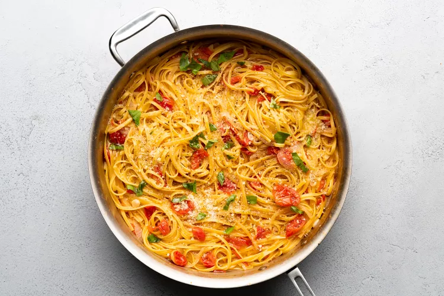

One Pot Pasta

I love this one pot pasta recipe. It's so easy to make and so satisfying to eat!
Ingredients
- 12 ounces linguine
- 12 ounces cherry or grape tomatoes, halved or quartered if large
- 1 onion, thinly sliced (about 2 cups)
- 4 cloves garlic, thinly sliced
- 1/2 teaspoon red-pepper flakes
- 2 sprigs basil, plus torn leaves for garnish
- 2 tablespoons extra-virgin olive oil, plus more for serving
- Coarse salt and freshly ground pepper
- 4 1/2 cups water or chicken broth
- Freshly grated parmesan cheese, for serving
Preperation
- Combine pasta, tomatoes, onion, garlic, red-pepper flakes, basil, oil, 2 teaspoons salt, 1/4 teaspoon pepper, and water in a large straight-sided skillet. Bring to a boil over high heat.
- Boil mixture, stirring and turning pasta frequently with tongs, until pasta is al dente and water has nearly evaporated, about 9 minutes.
- Season to taste with salt and pepper, divide among 4 bowls, and garnish with basil. Serve with oil and Parmesan.